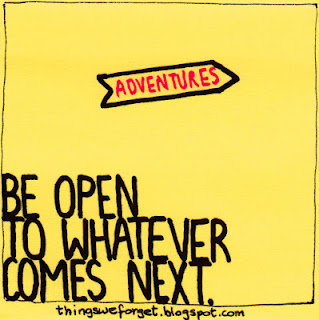
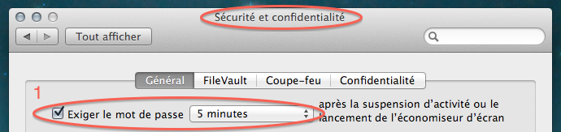
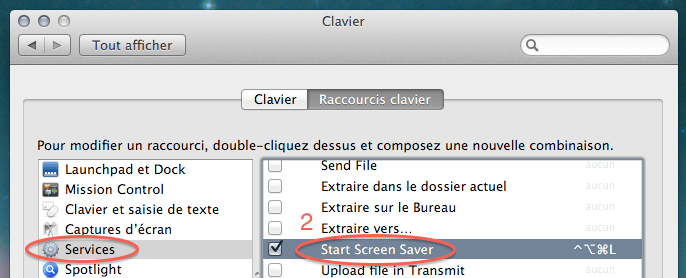

Oscar Peterson Trio - We Get Requests (1964)

Ой, какой кайфовый альбом! Вот, например, The Girl From Ipanema.
Ой, какой кайфовый альбом! Вот, например, The Girl From Ipanema.

Эдвард Нортон, Дэвид Финчер, Брэд Питт.Там еще много интересных фото)

Очень приятная фоновая музыка. Все альбомы доступны для онлайн-прослушивания на сайте автора.
Отличный айдиэм!
Интересная статья о том, что случилось с компанией Palm, которая в свое время лидировала на рынке наладонников, потом потеряла значительную его часть по причине отсутствия замены устаревшей Palm OS и появления iPhone, но смогла собраться и сделать вполне, кажется, конкурентноспособную webOS, чего, однако, оказалось недостаточно для того, чтобы вернуться. Почитайте, интересная история.
А для меня, как для одного из владельцев их продукции, еще и немного грустная.
В Сафари можно было с помощью шорткатов Command + 1-9 вызывать закладки из букмаркбара (такой хренотени с закладками, которая всегда видна).
В Гугл Хроме же с помощью этих же шорткатов осуществляется переключение между табами. Но, в отличие от закладок, которые ты расположил определенным образом и запомнил, где и что лежит (1-mail, 2-google reader, 3-lenta.ru), табы у тебя все время разные и имеют разную ширину, в итоге, в хроме я пользуюсь (и то редко) только command + 1, 2 ибо в остальных случаях надо считать, и проще просто кликнуть в нужный таб.
Для избранных букмарков можно, конечно, настроить keyword search, но делается это через попу и я уверен, что многие даже не догадываются о том, что keyword search можно использовать не только для поиска.
Вывод: такие шорткаты нужно использовать только в случае, когда связанная с ними информация меняется редко и не требует никакого “визуального” контроля.
Чуваки из “Smashing magazine” пишут о том, почему и когда можно ломать устоявшиеся шаблоны.

Оказывается, не все знают, как можно залочить мак с клавиатуры.
Идем в настройки безопасности и ставим галочку напротив опции "Спрашивать пароль после активации скринсейвера":

Потом идем в настройки клавиатуры, находим там группу шорткатов "Services" и вешаем шорткат на запуск скринсейвера:

Ну и напомню про самую клевую штуку — повесить Spotlight на Caps Lock!